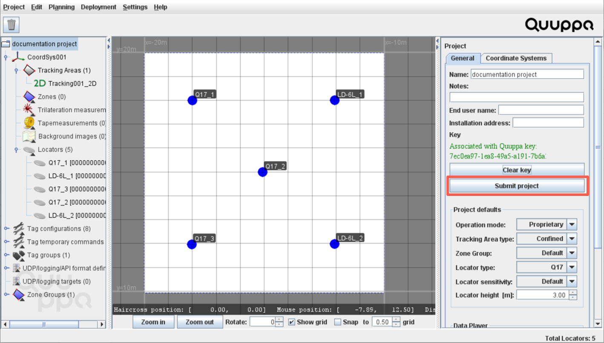

Setting up Mixed System Projects
Note: Mixed system projects can include
Generation Q Locators from multiple different subscriptions, but all included LD
Generation Locators must be on one license. To run the project, you should use the
project key that has been automatically generated for the license.
-
To create a new project or start using an existing project:
- Open the latest version of the QSP.
- Create a new project and select the appropriate default Locator type
(e.g. if the majority of your Locators are Q17, select
Q17) .Note: Alternatively, you can also open an existing project.
- Add new Locators to the project.
- Install the Locators.
- Position, identify and focus the Locators.
- Configure the tags.
- Save the project.Note: For more information about these steps, please refer to the Development Kit Quick Start Guide.
-
To find the right project key (i.e. the one linked to the LD Generation
Locators) from in the QCP:
- In the dashboard, click on Licenses to open the list of available licenses.
- Select the relevant license by clicking on the Licence Key number to open the License details page.
- From the License details page, click the project key link to navigate to the Project Key Details page.
- Link the project key to the subscription that you want Generation Q
Locators to be associated with by clicking the
Change button next to the Linked with
Subscription heading. This will allow any so far
unassociated Locators used in the project to be automatically associated
with the correct subscription. Note: Any Generation Q Locators already associated with subscriptions will remain on their original subscription. If all of your Locators are already associated with subscriptions, you can skip this step.
- In the Subscription list that opens, link the project key with the right subscription by clicking the relevant Link with this Subscription button in the Action column.
-
To associate your project with the new project key:
- Return to the project in the QSP.
- Select the project folder in the object tree on the left.
- In the object info panel on the right, go to the General tab and click the Associate with a key button.
- Find the relevant project key in the panel that opens, select it and click the Associate with selected key button.
-
Submit the project in the QSP by clicking the Submit
project button in the object info panel on the right.

-
To activate the project in the QPE Web Console:
- Start the QPE.
- Open the QPE Web Console.
- Click the Set New Key button to associate the project with the project key. The QPE will perform a file sync.
- Start the QPE in tracking mode. Note: It may take a moment for all of the Locators to show in the Locator table.
Congratulations, your project is now up and running!